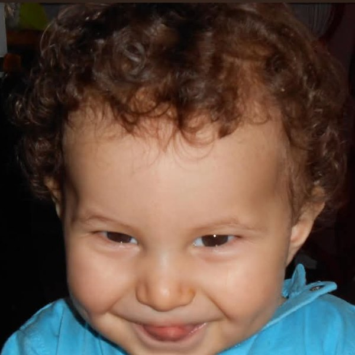
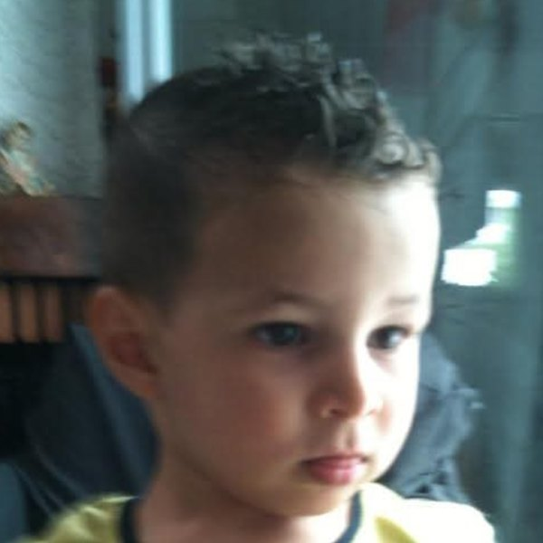
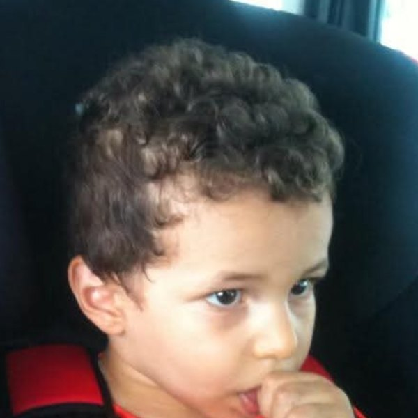
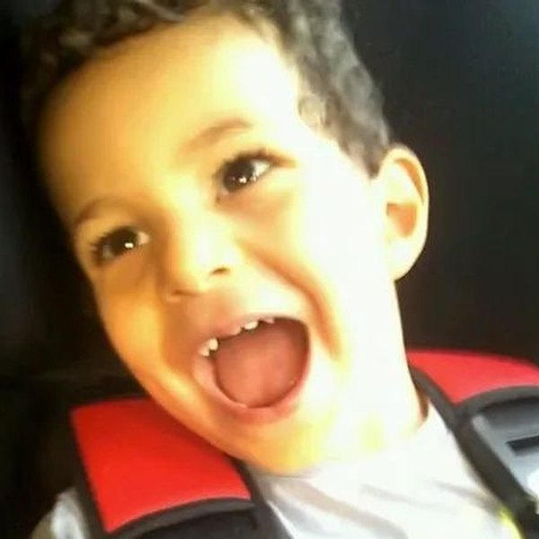
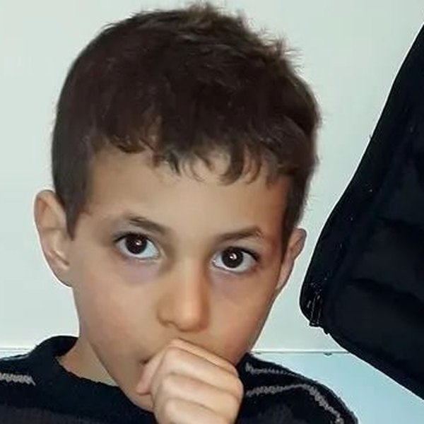
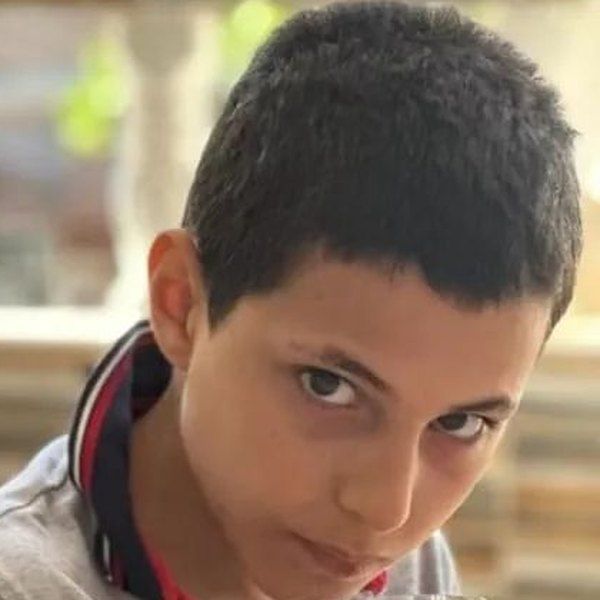
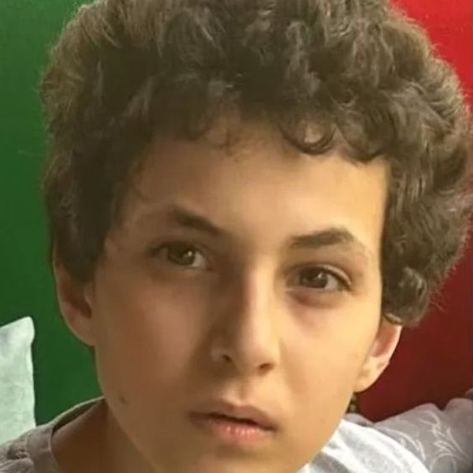
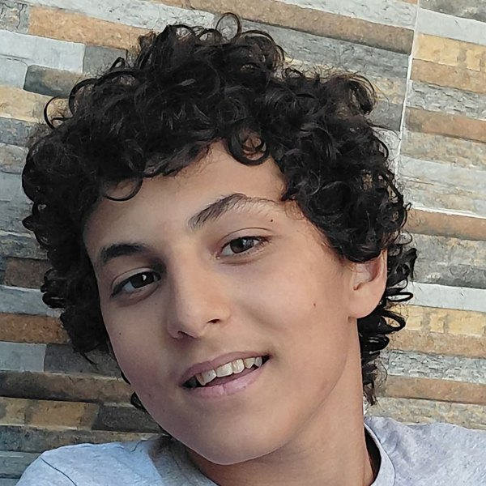

Autour de Mohamed
Mohamed, de 2 à 15 ans
Treize années d'évolution, de doutes, d'épreuves et de progrès.
Et malgré la difficulté, le bonheur l'emporte, avec la conscience de l'immense chance d'avoir un enfant comme lui.

2 ans et demiLe diagnostic
2014Naissance de l'association
Apprendre autrement
Les premiers éclats de rire
Grandir, pas à pas
Chaque jour, des progrès
L'adolescence
15 ansAujourd'hui
Faites glisser pour suivre son parcours →
Notre histoire
ADM Autisme – Autour de Mohamed est née en 2014, autour de notre fils.
Mohamed a aujourd'hui 15 ans. Il a reçu un diagnostic de trouble du spectre de l'autisme à 2 ans et demi : un autisme sévère, sans langage oral. Au fil des années, d'autres maladies sont venues s'ajouter, les unes après les autres : un diabète de type 1 insulinodépendant, une insuffisance pancréatique exocrine et une épilepsie. À chaque étape, il a fallu tout justifier pour faire reconnaître la gravité de la situation.
Des refus, encore et encore
Nos premiers dossiers MDPH ont été refusés, les uns après les autres. Notre situation était pourtant grave, et bien réelle. Mais nous n'étions pas outillés : nous ne savions pas exposer notre situation ni exprimer nos besoins. Alors, malgré la gravité de ce que nous vivions, nous n'étions pas entendus.
C'est la leçon la plus importante de notre parcours : une situation grave mal expliquée peut être refusée.
Apprendre à faire valoir nos droits
Nous avons appris, pas à pas. À décrire précisément nos besoins. À justifier chaque demande, pièce à l'appui. À manier les articles de loi pour que l'on cesse de nous refuser des choses simplement parce que nous ne savions pas les demander.
Aider d'autres familles
Ensuite, nous avons commencé à monter des dossiers MDPH avec d'autres familles. Plus de 90 % de leurs demandes ont été acceptées, en première demande ou après recours.
Notre règle
- Demander ce qui est proportionné à la situation de la famille. Ni plus, ni moins.
- En cas de refus, ne pas attendre : répondre tout de suite, avec les articles de loi qui mettent la commission face à ses responsabilités.
- Ne pas chercher la compassion, mais la reconnaissance de nos droits : réclamer ce qui est dû, et montrer ce qui n'a pas été compensé comme la loi le prévoit.
Pourquoi ce site
Ce site n'est pas là pour faire votre dossier à votre place, ni pour vous dicter quoi écrire. Il est là pour vous outiller : pour que vous puissiez, vous aussi, faire valoir les droits de votre enfant, par vous-même, selon votre situation.
Grégory Porte, papa de Mohamed, président de l'association et consultant en autisme
E-mail : gporte.consulting@gmail.com
Téléphone : 09 72 19 09 22
Portable et WhatsApp : 06 75 40 43 76
L'Isle-d'Abeau (38080), Nord-Isère